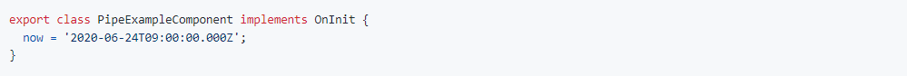
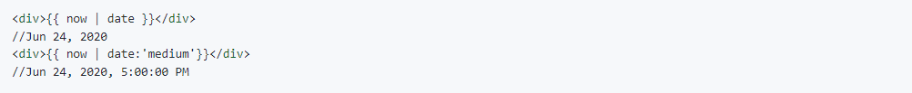

Các ứng dụng thông thường đều bao gồm các tác vụ khá đơn giản:
1. Lấy dữ liệu từ server. Đơn giản là gọi API call lên server,
phức tạp thì listen tới một websocket để nhận được dữ liệu
theo thời gian thực.
2. Transform the data, ví dụ như bạn nhận được giá trị là
2020-06-24T09:00:00.000Z dưới định dạng ISO. Nhưng trên UI
mình phải show ở format dễ đọc cho user Jun 24, 2020.
3. Và hiển thị dữ liệu lên UI cho người dùng.
Pipes sẽ lo phần thứ 2, transform data trước khi show cho
người dùng.
Pipes là gì?
Hiểu đơn giản, pipe là một function nhận input mà chúng ta
truyền vào, và output ra giá trị mình mong muốn. Ví dụ giữa
client và server khi trao đổi thông tin liên quan đến thời
gian, thường dùng ISO format "2020-06-24T09:00:00.000Z", tương
đương với ngày 24 tháng 6, 5h chiều (giờ Singapore). Tuy nhiên
khi hiển thị, mình ko thể hiển trị trực tiếp ISO string cho
người dùng vì chắc chắn là ko phải ai cũng là developer để
hiểu được đó là gì. Vậy nên chúng ta cần transform ISO string
ở trên dưới dạng mà người dùng có thể hiểu được, ví dụ Jun 24,
2020, 5:00:00 PM. Để làm được việc này bạn có khá nhiều lựa
chọn, nhưng thường thì có hai lựa chọn trong Angular:
1. Viết một function, nhận date input và return output.
2. Viêt một pipe, cũng nhận input và return output.
Điểm lợi thế của Pipe là dễ tái sử dụng. Vì thông thường sẽ có
khá nhiều page cần hiển thị date time, việc dùng Pipe sẽ đem
lại nhiều ưu điểm hơn là function.
Dùng pipe như thế nào?
Angular có cung cấp sẵn một số pipes thường dùng trong package
@angular/common. Tuy nhiên số lượng pipe có sẵn đó cũng không
thể nào đáp ứng được hết các nhu cầu trong các ứng dụng khác
nhau, nên chúng ta cũng hoàn toàn có thể viết các custom pipe
theo nhu cầu thực tế.
Như đã nói, pipe sẽ nhận vào input và output ra một giá trị
mình mong muốn.
Mình có một biến tên là now ở trong component.

Và đây là cách mình hiển thị với built in pipe Date trong
Angular

Chú ý phần giữa hai dấu ngoặc nhọn , ngoài việc truyền vào
variable bạn muốn hiển thì thì có thêm dấu xổ dọc |. Đó là
pipe operator, sau đó là tên của pipe bạn đã định nghĩa. Tất
cả pipe đều hoạt động theo cách này.
Pipe and parameters
Pipe cho phép truyền thêm các parameters, ví dụ date ở trên
mình có thể truyền thêm format medium phân tách nhau bằng dấu
hai chấm :. Đó cũng là cú pháp để pass parameter cho pipe.
Bạn có thể truyền vào số lượng parameter không giới hạn.
Chaining pipe
Pipes cho phép chúng ta dùng nhiều pipe để transform một
value, cú pháp có dạng như sau.
Sau khi có output pipe_name_1, thì output này sẽ được xử lý
qua pipe_name_2 rồi tương tự đến pipe_name_n để ra output cuối
cùng hiển thị lên UI. Vẫn ví dụ với date ở trên, mình sẽ thêm
pipe uppercase để chuyển hết text thành chữ hoa. Sau khi biến
now được xử lý bằng date pipe sẽ có value Jun 24, 2020,
5:00:00 PM, sau đó uppercase sẽ transform thành JUN 24, 2020,
5:00:00 PM. Thứ tự thực hiện sẽ là từ trái qua phải. Sau khi
pipe_name_1 chạy xong có value thì pipe_name_2 sẽ nhận vào
output từ pipe_name_1.
Các pipe có sẵn đi kèm với Angular (built-in pipe)
Viết custom pipe
Ví dụ này lấy từ chính application đang chạy của mình. Use
case đơn giản là bọn mình cần code rất nhiều form CRUD. Vì
thường form dành cho add item và form dành cho edit item sẽ
được reuse cùng code HTML. Nếu bạn click Add item, form add sẽ
được hiển thị và title của form lúc đó sẽ là Add Item, tương
tự cho edit. Khi mở form Edit, trong router có truyền itemId
lên URL nên bọn mình biết được đây là form Edit. Còn form Add
thì sẽ không có itemId. Thông thường bọn mình có thể viết đi
viết lại một cái logic trong từng component.

Cho đến một ngày một dev mắc một lỗi typo ngớ ngẩn là thay vì
Add, bạn ấy type thành Adđ (Vì có bật Unikey :))) Thế là mình
quyết định viết một pipe đơn giản là nhận vào một string, nếu
string này có value, show Edit, còn không thì show Add. Tránh
được lỗi typo như ở trên về sau. Để viết một pipe dành riêng
cho nhu cầu của từng dự án, cần follow hai bước sau.
1. Trước tiên chúng ta cần tạo một class có implement
interface PipeTransform.
Interface này chỉ bao gồm một method duy nhất tên là
transform. Đây là interface PipeTransform cần implement
Đây là ví dụ một class sau khi đã implement PipeTransform
Đại khái là method transform ở đây rất đơn giản. Nếu
resourceId là truthy thì return Edit, nếu ko thì return lại
Add.
Thêm Pipe decorator cho class đã implement PipeTransform
Giống như component có decorator @Component. Pipe cũng có
decorator @Pipe.
Khi thêm Pipe decorator thì có một property là required, đó
chính là tên của pipe. Mình đặt là appTitle. Nhớ là phải đặt
AppTitlePipe trong mảng declarations ở module tương ứng mà bạn
muốn sử dụng. Nếu không Angular sẽ báo lỗi. Xong rồi đây, giờ
mình có thể dùng appTitle như bình thường.
Class name follow UpperCamelCase, tức là viết hoa các chữ cái
đầu của từng từ name của pipe sẽ follow theo camelCase, tức là
chữ cái đầu của từ đầu tiên viết thường. Các chữ cái đầu của
các từ tiếp theo viết hoa. Không được dùng dấu gạch ngang -
cho name Chi tiết có trong
Angular Style Guide
Custom pipe parameters
Vẫn là ví dụ trên, nhưng ở một vài page có yêu cầu là khi mở
form Add, sẽ không hiện title là Add nữa, mà đổi lại thành
Set. Ví dụ Set Item. Còn form Edit thì đổi lại thành Change.
Mình hoàn toàn có thể truyền vào hai parameters tương ứng với
hai text này. Và nếu mặc định không truyền mình sẽ set lại Add
và Edit tương ứng. Code của mình có thể được viết lại như sau:
Và dùng trên UI
Method transform sẽ nhận vào nhiều argument. Trong đó:
Argument đầu tiên chính là value của variable khi mình dùng
pipe. Ví dụ span userId | appTitle thì transform(resourceId:
string). resourceId chính là value của userId được truyền vào.
Khi truyền các parameter khác bằng dấu hai chấm : thì argument
tương ứng trong method transform sẽ là từ argument thứ 2 trở
đi. Ví dụ như userId | appTitle: "Set":"Change" thì "Set" sẽ
là value của addText: string và "Change" sẽ tương ứng với
editText: string
Detecting changes with data binding in pipes
Primitive type
Với pipe appTitle ở trên, vì mình truyền vào giá trị string
cho argument resourceId. Nên khi value của resourceId thay
đổi, pipe nhận biết được là có sự thay đổi và update UI tương
ứng. Ví dụ:
Vậy đối với primitive type như string, boolean, number.
Angular detech changes khá là straight forward. Mỗi khi value
thay đổi thì pipe cũng sẽ update theo. Còn đối với các
reference type như object hay array thì sao nhỉ?
Reference type
Ví dụ như có một mảng của users như sau.
Mình có một pipe tên là isAdult, để filter ra những user lớn
hơn 18 tuổi.
Và mình render cả 2 list lên màn hình
Như các bạn thấy list những người trưởng thành hiện không có
user Tuan Anh dc render, chứng tỏ pipe đã hoạt động như ý mình
muốn Bây giờ mình add thêm 2 textbox để điền user và tuổi,
cùng với một button để add thêm user vào mảng users. Tuy nhiên
khi add thêm một user với tuổi lớn 18 vào mảng users. Phần
render list người lớn bên phải ko tự update.
Mình push thêm phần tử mới vào mảng khi click add. Tức là
mutate giá trị của mảng trực tiếp, chứ không gán một reference
mới cho mảng. Điều này dẫn đến một đặc điểm quan trọng của
Pipe.
Mặc định pipe luôn pure (tinh khiết), tức là pipe chỉ trigger
lại khi giá trị của input đầu vào, tức là thay đổi value với
primitive type và thay đổi reference đối với object. Nên khi
mình push trực tiếp phần tử vào mảng, reference của mảng không
thay đổi. Dẫn đến pipe ko được execute lại và ko update lên
UI. Việc check reference thay đổi nhanh hơn rất nhiều so với
việc phải check từng phần trong array hay từng property trong
object xem có thay đổi hay không. Nên khuyến cáo luôn dùng
pure Pipe khi có thể. Để fix, có hai cách
1. Update the variable reference
Tức là thay vì mình push một item vô mảng users. Thì mình sẽ
gán mảng users bằng một mảng mới với tất cả items cũ và item
mới được add. Đoạn code ở trên sẽ được sửa lại thành.
Bây giờ thì bạn thấy list người lớn cũng đã được update khi
mình bấm nút.
2. Set impure Pipe
Nếu bạn muốn trigger pipe khi có thay đổi value của một phần
tử trong array, hay khi một property của object bị thay đổi.
Bạn có thể cấu hình pipe của bạn với thuộc tính pure với giá
trị false trong decorator. Mặc định, pure luôn có giá trị
true.
Summary
hy vọng các bạn đã hiểu được Pipe và các use case phổ biến
trong việc dùng Pipe. Cũng như sự khác nhau giữa pure và
impure Pipe cùng change detection.